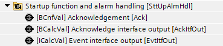
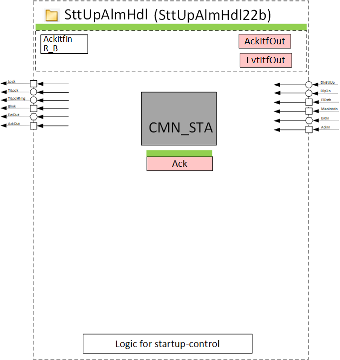
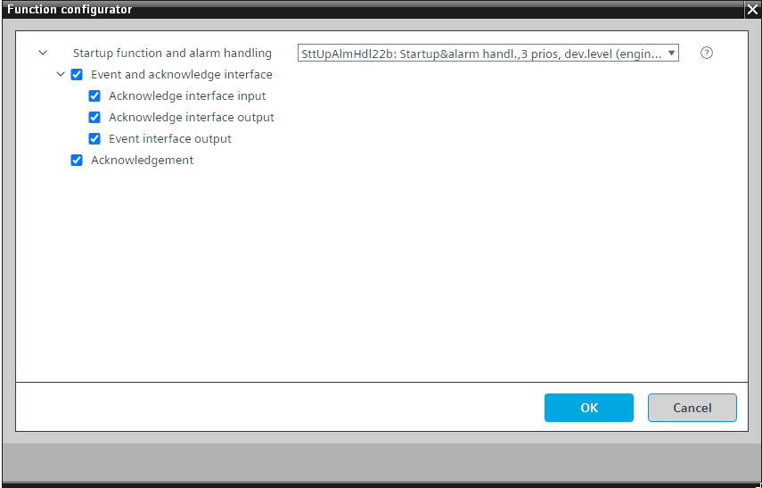

[SttUpAlmHdl22b] 启动和警报处理，设备级别的 3 个优先级
Program block, name / node subtype: [SttUpAlmHdl22b] Startup and alarm handling, 3 priorities at device level
Library hierarchy: Universal equipment
Family: SttUpAlmHdl
项目树 | 图表 |
|---|---|
|
 |  |
Configurator


程序块存储在没有 I/Os. 的库中 使用auto-create and auto-connect函数创建 I/Os 和 /or 将它们连接到接口块，例如 R_A、CMD_B。或者，从包含库中预定义 I/Os 的文件夹中取出 I/Os，并从工厂中取出 /or，并将它们连接到接口块。
这是 SttUpAlmHdl22 的子集。它针对在工厂 SysFnctAS21x 中的使用进行了优化。
该函数在 SttUpAlmHdl22 中描述。
将功能块 CMN_STA 连接到称为 AS_VIEW 的自动化站的最高结构化视图。
该程序块具有以下可选功能：
Option: Event and acknowledge interface
以双整数值对象的形式提供有关聚合警报、故障、手动干预及其状态的信息。该值表示 CMN_STA 输出引脚的 0 或 1 状态，转换为双整数值。
它可以接收和发送确认信号。
Option: Acknowledgement
用于确认属于该结构化视图的所有对象的软件按钮。
SttUpAlmHdl22 and its subsets
SttUpAlmHdl22 未在库中的任何基本解决方案中使用。 SttUpAlmHdl22 具有三个针对不同用途进行优化的程序块子集。
如果您需要扩展一个子集，例如设备自己的确认按钮和报警灯，请使用“功能配置器”选择 SttUpAlmHdl22 并将其配置为所需的功能。
下图显示了 SttUpAlmHdl22 及其子集：SttUpAlmHdl22a、SttUpAlmHdl22b、SttUpAlmHdl22c。

SttUpAlmHdl22a 经过优化，可用于plants.
SttUpAlmHdl22b 针对在工厂中的使用进行了优化SysFnctAS21x.
SttUpAlmHdl22c 针对在工厂中的使用进行了优化ElPnl21x.
Example of an electrical cabinet with two automation stations
事件通过工厂 SysFnctAs21x 中的 SttUpAlmHdl22b（CMN_STA 连接到 AS_VIEW）在设备级别收集，并转发（通过 EvtItfOut）到工厂 ElPnl21x 中的 EvtAckCoord22。从那里，它们被转移到包含灯的SttUpAlmHdl22c。
SttUpAlmHdl22c 中的确认按钮被传输到 EvtAckCoord22 中的 AckItfOut，并从那里由工厂 SysFnctAS21x 中 SttUpAlmHdl22b 中的 AckItfIn 读取，并通过 CMN_STA 传输到 AS_VIEW。

姓名 | 描述 | 类型 | 报警/通知类 | 趋势/类型 | |
|---|---|---|---|---|---|
Ack | Acknowledgement | BCnfVal: Binary configuration value | No | No | |
描述 |
|---|
|
Event and acknowledge interface 属于该选项的元素： Acknowledge interface input EvtItfOut | Event interface output | ICalcVal: Integer calculated value AckItfOut | Acknowledge interface output | BCalcVal: Binary calculated value |